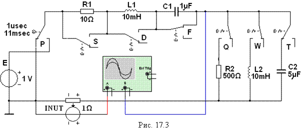
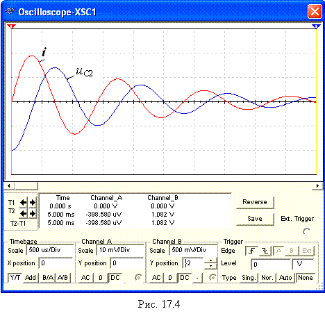

Задание 2. Запустить
лабораторный комплекс Labworks и программную
среду МS10 (щёлкнув мышью на
команде Эксперимент меню комплекса
Labworks). Открыть файл 17.3.ms10, размещённый в папке Circuit Design Suitе 10.1, или собрать на рабочем поле программной среды MS10 схему (рис. 17.3) для исследования временных характеристик линейных электрических цепей.

Для нечетных
N с помощью клавиш S, D, F, Q, W и Т
клавиатуры, управляющих соответствующими переключателями, сформировать вначале первое, затем четвёртое звено, а для чётных N – вначале третье, а затем четвёртое звено схемы цепи (см.
табл. 17.1).
Установить значения параметров элементов цепи, вычисленные в Задании 1, и режимы работы источника питания
E и осциллографа XSC1.
Рекомендации
по установке параметров переключателя Р
приведены в п. 3. раздела "Моделирование схем …". Настройку
горизонтальной развёртки (Time base) и вертикального
отклонения лучей каналов (Channel А и Channel В) осциллографа
проводить с учётом постоянной времени каждого звена t = 1/a, периода Тсв = 2p/wс и амплитуд свободных колебаний напряжения u2.
Ориентировочные значения параметров настройки осциллографа приведены на
рис. 17.4. Запустить программу MS10. Скопировать смоделированную схему испытания звеньев цепи и осциллограммы выходных переходных величин.
Оценить динамические свойства звена 4 по
переходному напряжению uC2 (см. рис. 17.4). Показатели качества
звена 4 занести в табл. 17.3.
|
Показатели качества |
s, % |
tф , мc |
tз , мc |
tпп , мc |
|
Измерено |
|
|
|
|
Сравнить полученные осциллограммы переходных функций звеньев с
построенными ранее графиками hu(t).
